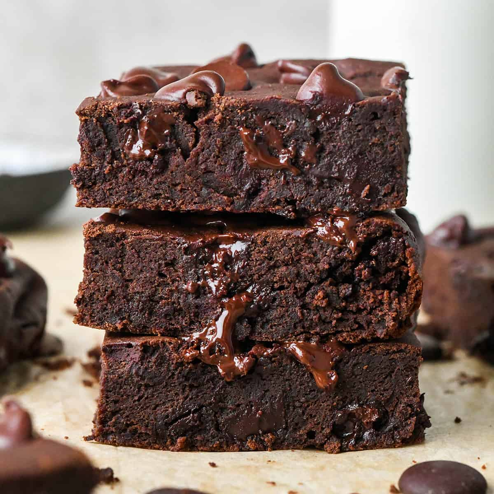

BROWNIES

Mom L's Brownies
Who doesn't love brownies? This is a simple recipe that makes the yummiest brownies ever.
Ingredients
- 1/4 teaspoon salt
- 2 eggs
- 1 cup sugar
- 1 teaspoon vanilla
- 2 squares unsweetened chocolate
- 1/3 cup butter
- 2/3 cup flour
- 1/2 teaspoon baking powder
Steps
- Melt chocolate and butter.
- Mix flour with baking powder and salt.
- Beat eggs well and gradually beat in sugar.
- Blend in chocolate and vanilla to sugar mixture.
- Mix in flour mixture.
- Spread in greased 8-inch square pan.
- Bake at 350 degrees for 25 minutes.